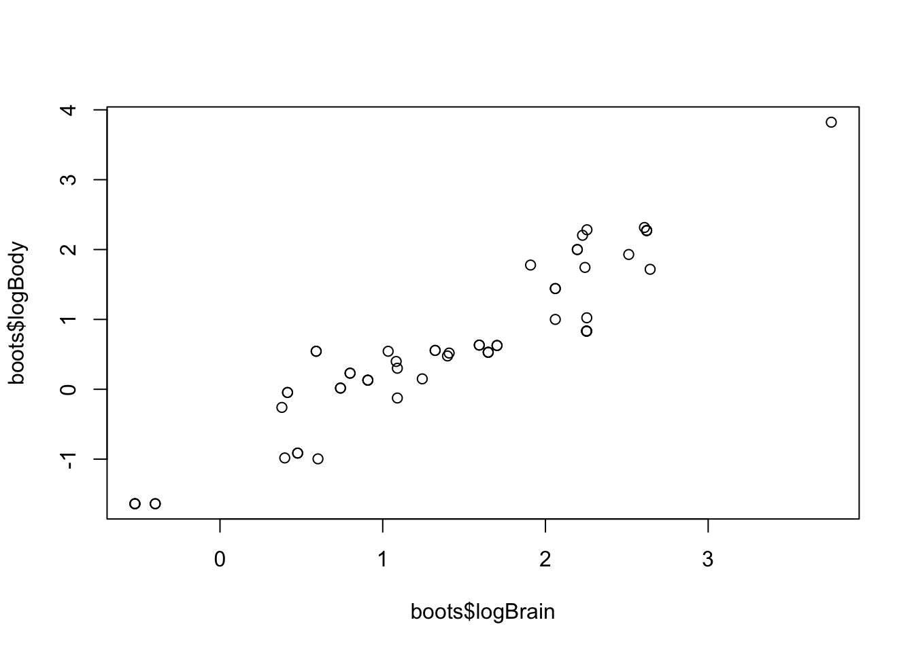

Chapter 12 Resampling
library("tidyverse")12.1 The bootstrap
We’ll work with a subset of the Allison et al. data. We’ll start by using the body and brain weight measurements from all the species, after log-scaling them. Later on, we’ll also use the TotalSleep variable as well, so let’s remove any rows that have missing data for any of these 3 variables.
# Load table
allisontab <- tibble(read.csv("Data_allison.csv"))
# Remove rows with missing data in columns of interest
allisontab <- filter(allisontab,!is.na(BrainWt) & !is.na(BodyWt) & !is.na(TotalSleep))
# Log-scale body and brain weight
allisontab <- mutate(allisontab,logBody=log10(BodyWt), logBrain=log10(BrainWt))Below is a function to obtain a single bootstrapped sample from an input data. Take a close look at each step.
bootstrap <- function(tab){
# Preliminary check: if the table is a vector with a single variable, turn it into a matrix
if(is.null(dim(tab))){tab <- matrix(tab,ncol=1)}
# Count the number of elements in our data
numelem <- nrow(tab)
# Sample indexes with replacement
bootsidx <- sample(1:numelem, replace=TRUE)
# Obtain a boostrapped sample by selecting the bootstrapped indexes from the original sample
final <- tab[bootsidx,]
# Produce bootstrapped sample as output
return(final)
}Let’s see what happens when we run this function on our data.
boots <- bootstrap(allisontab)
plot(boots$logBrain,boots$logBody)
Repeat the above command lines multiple times. What happens?
Let’s estimate a parameter: the slope coefficient in a linear regression of log brain weight on log body weight:
estimate <- lm(logBrain ~ logBody, data=allisontab)$coeff[2]
estimate## logBody
## 0.7591064Exercise: try estimating the same parameter from a series of 100 bootstrapped samples of our original data, and collecting each of the bootstrapped parameters into a vector called “bootsvec.” Hint: you might want to use a for loop or a vectorized sapply() function.
Let’s plot the ecdf of all our estimates, using the function ecdf().
plot(ecdf(bootsvec))
abline(v=estimate,col="red")
We are now ready to obtain confidence intervals (CIs) of our original parameter estimate, using our bootstrapped distribution. There are multiple ways to obtain CIs from a bootstrapped distribution. Some of these assume that the ECDF has particular properties, while others are more generally applicable:
a) Standard error approach - assumes ECDF is normal
b) Percentile approach - assumes ECDF is symmetric and median-unbiased
c) Pivotal approach - most general, makes very few assumptions.
These three approaches generally result in very similar CIs, but they differ (slightly) in methodology. The most widely used method is the pivotal approach, though the motivation for its construction is a bit long-winded. In the interest of time, we’ll demonstrate how to run the first two approaches in R. We’ll leave the third approach as an exercise you can do at home (read Box 8-1 in the Edge book for an explanation of it, and a code example).
12.2 Permutation test
Let’s evaluate the relationship that there is no relationship between logBrain and logBody. Recall that one way to do it would be by using a linear model, and testing whether the value of the fitted slope is significantly different from zero, using a t-test:
summary(lm(logBrain ~ logBody, data=allisontab))##
## Call:
## lm(formula = logBrain ~ logBody, data = allisontab)
##
## Residuals:
## Min 1Q Median 3Q Max
## -0.75701 -0.21266 -0.03618 0.19059 0.82489
##
## Coefficients:
## Estimate Std. Error t value Pr(>|t|)
## (Intercept) 0.93507 0.04302 21.73 <2e-16 ***
## logBody 0.75911 0.03026 25.09 <2e-16 ***
## ---
## Signif. codes: 0 '***' 0.001 '**' 0.01 '*' 0.05 '.' 0.1 ' ' 1
##
## Residual standard error: 0.3071 on 56 degrees of freedom
## Multiple R-squared: 0.9183, Adjusted R-squared: 0.9168
## F-statistic: 629.2 on 1 and 56 DF, p-value: < 2.2e-16This test, however, makes assumptions on our data that sometimes may not be warranted, like large sample sizes and homogeneity of variance. We can perform a more general test that makes less a priori assumptions on our data - a permutation test - as long as we are careful in permuting the appropriate variables for the relationship we are trying to test. In this case, we only have two variables, and we are trying to test whether there is a significant relationship between them. If we randomly shuffle one variable with respect to the other, we should obtain a randomized sample of our data. We can use the following function, which takes in a tibble and a variable of interest, and returns a new tibble in which that particular variable’s values are randomly shuffled.
permute <- function(tab,vartoshuffle){
# Extract column we wish to shuffle as a vector
toshuffle <- unlist(tab[,vartoshuffle],use.names=FALSE)
# The function sample() serves to randomize the order of elements in a vector
shuffled <- sample(toshuffle)
# Replace vector in new table (use !! to refer to a dynamic variable name)
newtab <- mutate(tab, !!vartoshuffle := shuffled )
return(newtab)
}Now we can obtain a permuted version of our original data, and compute the slope estimate on this dataset instead:
permuted <- permute(allisontab, "logBrain")
plot(permuted$logBody,permuted$logBrain)permest <- lm(logBrain ~ logBody, data=permuted)$coeff[2]
permest## logBody
## 0.1105585Exercise: try estimating the same parameter from a series of 100 permuted versions of our original data, and collecting each of the permuted parameters into a vector called “permvec.”
We now have a distribution of the parameter estimate under the assumption that there is no relationship between these two variables:
Exercise: obtain an empirical one-tailed P-value from this distribution by counting how many of the permuted samples are as large as our original estimate, and dividing by the total number of permuted samples we have. Note: you should add a 1 to both the denominator and the numerator of this ratio, in case there are no permuted samples that are as large as the original estimate, so as not to get an infinite number.
12.3 Validation
We’ll perform a validation exercise to evaluate the error of various models on the data. In this case, we’ll create a predictor for TotalSleep as a function of logBody, using a linear model, and then test how well it does. We’ll first divide our data into a “training” partition - which we’ll use to fit our model - and a separate “test” partition - which we’ll use to test how well our model is doing, and avoid over-fitting. Each partition will be one half of our original data.
# Obtain the number of data points we have
numdat <- dim(allisontab)[1]
# For the training set, randomly sample 50% of the data indexes
trainset <- sample(numdat, round(numdat*0.5))
# For the test set, obtain all indexes that are not in training set
testset <- seq(1,numdat)[-trainset]Let’s begin by calculating the mean squared error (MSE) between our observatiosn and our predictions in our test partition, after fitting a linear model to our training partition:
# Fit the linear model to the training subset of the data
fit1 <- lm(TotalSleep ~ logBody, data=allisontab,subset=trainset)
# Predict all observations using the fitted linear model
predall <- predict(fit1,allisontab)
# Compute mean squared differences between observations and predictions
sqdiff <- (allisontab$logBrain - predall)^2
# Extract the differences for the test partition
sqdiff.test <- sqdiff[testset]
# Compute the mean squared error
mse1 <- mean(sqdiff.test)Now, we’ll try to fit our data to two more complex models: a quadratic model and a cubic model, using the function poly:
fit2 <- lm(TotalSleep ~ poly(logBody,2), data=allisontab,subset=trainset)
mse2 <- mean(((allisontab$logBrain - predict(fit2,allisontab))^2)[testset])
fit3 <- lm(TotalSleep ~ poly(logBody,3), data=allisontab,subset=trainset)
mse3 <- mean(((allisontab$logBrain - predict(fit3,allisontab))^2)[testset])We can see that the MSE appears to increase for the more complex models. This suggests a simple linear fit performs better at predicting values that were not included in the training set.
Exercise: compute the MSE on the training partition. Compare the resulting values to the MSE on the test partition. What do you observe? Is the difference in errors between the three models as large as when computing the MSE on the test partition? Why do you think this is?
12.4 Cross-validation
We’ll now perform a cross-validation exercise. If you haven’t installed it, you’ll need to install the library boot before loading it.
if(require("boot") == FALSE){install.packages("boot")}## Loading required package: bootlibrary("boot")The function cv.glm() from the library boot can be used to compute a cross-validation error. This function is designed to work with the glm() function for fitting generalized linear models in R, but we can compute a simple linear regression using glm() as well, and then feed the result into cv.glm():
fit1=glm( TotalSleep ~ logBody, data=allisontab )
# The LOOCV error is computed using the function cv.glm()
cv.err=cv.glm(allisontab,fit1)The value of the cross-validation error is stored in the second element of the attribute delta of the output of cv.glm. By default, this is a “leave-one-out” cross-validation (LOOCV) error, meaning it computes error by leaving 1 data point out of the fitting and evaluating the error at that data point. The process is iterated over all data points, and the errors are then averaged together. We can obtain the value of the LOOCV error by writing:
cv.err$delta[1]## [1] 15.97798Now, let’s compute the LOOCV error for increasingly complex polynomial models (linear, quadratic, cubic, etc.):
CVerr=rep(0,5)
for(m in 1:5){
fit=glm(TotalSleep ~ poly(logBody,m), data=allisontab)
CVerr[m]=cv.glm(allisontab,fit)$delta[1]
}Exercise: Plot the results of this cross-validation exercise. Which model has the lowest LOOCV error?
Exercise: Take a look at the help function for cv.glm. Which argument would you modify to be able to compute the 10-fold cross-validation error, instead of the LOOCV error. Can you do this for the five models we tested above?